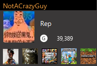

To find NotACrazyGuy's Xbox account, one would just search up his name on the platform: NotACrazyGuy. Or one could go to this link right here, that would pop up a compiled profile highlight of his account, you can click here! Matthew does not really use his Xbox anymore except for one game, and so it is much less likely to find him on here, as he would most likely be on his PC at any given time. On this page is highlighted some important parts of his profile.
Xbox Profile Summary

Some stats about this account
NotACrazyGuy's Xbox account that he uses currently has a combined total GamerScore of 39,389 (Updated 11/23), and the total amount of games that he has played at least once is 328 games according to xboxgamertag.com. Many of the hours of his play time on his Xbox can all be given credit to a single game in particular, Grand Theft Auto 5. This is quite possibly one of his favorite games to come back to, due to the particular funny moment you can often times create for yourself and your friends. He mostly played with one of his friend's cousin who suffers from down syndrome, and the duo often times spends night hours playing away at this game in particular.